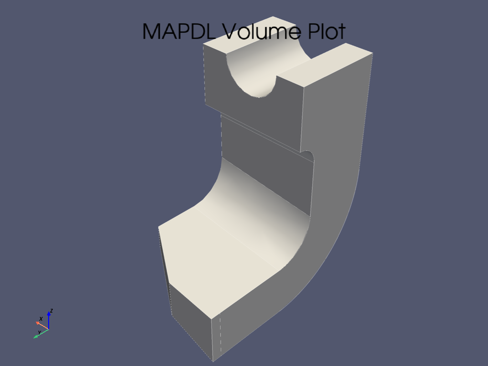
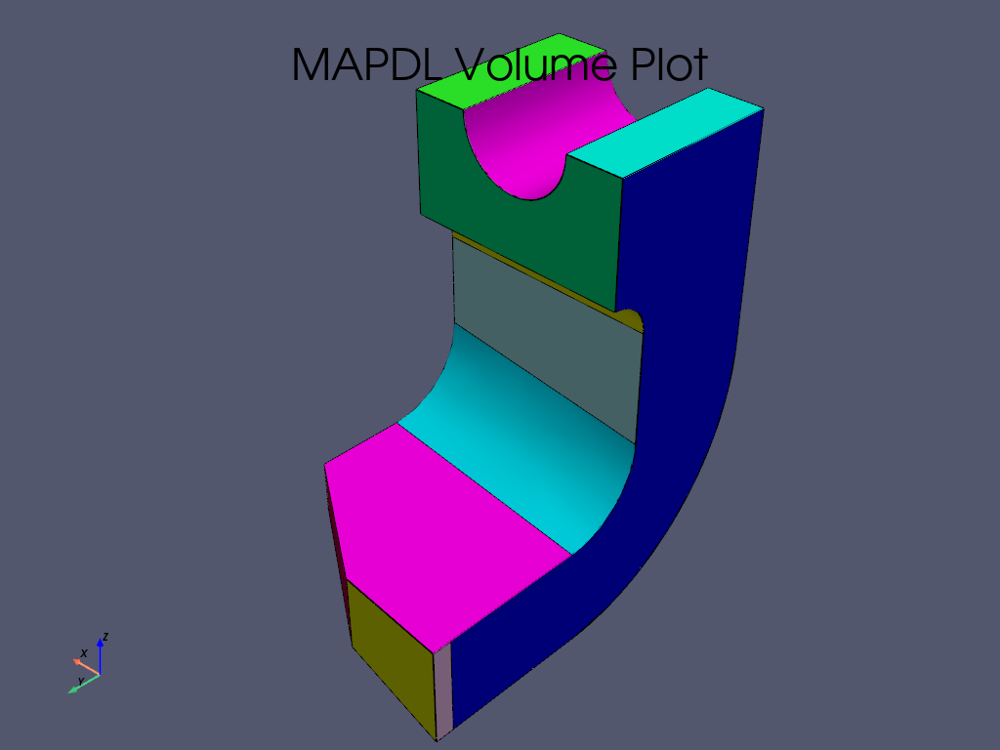
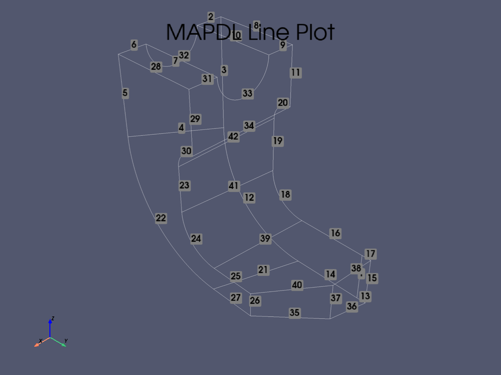
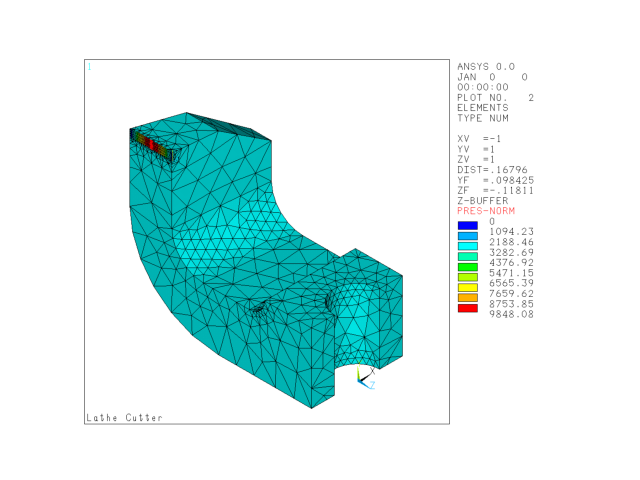
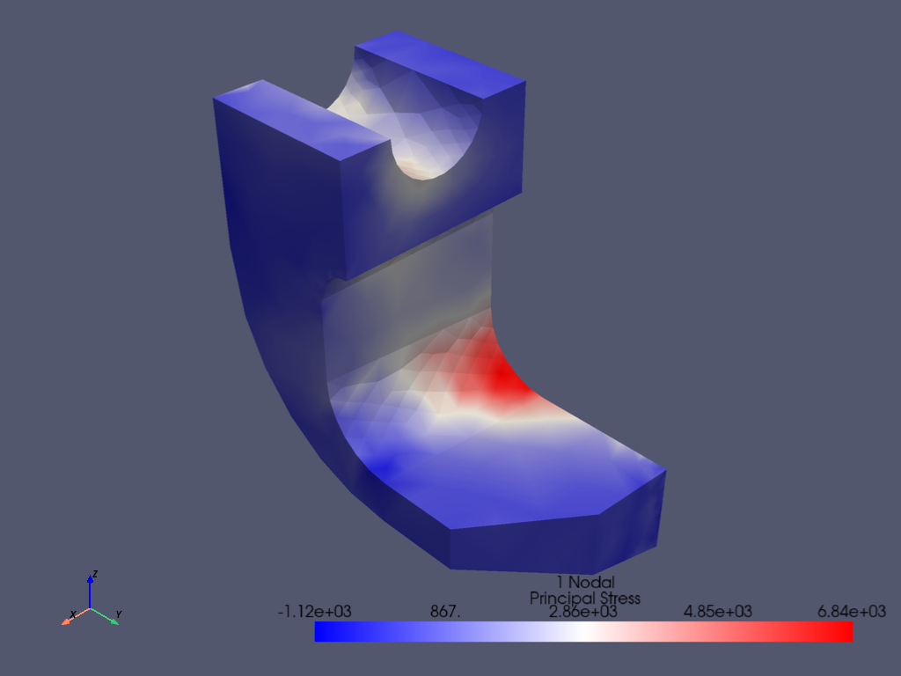
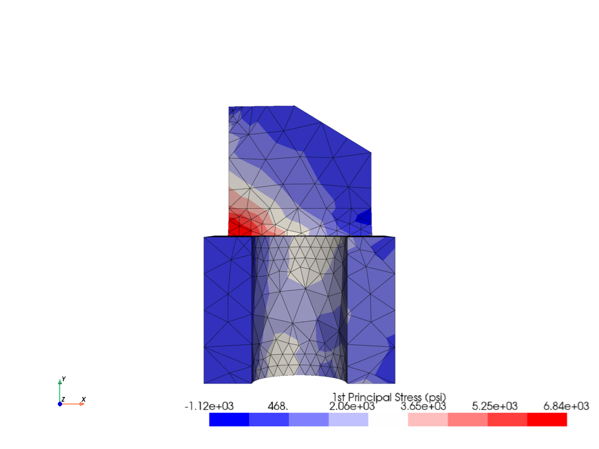
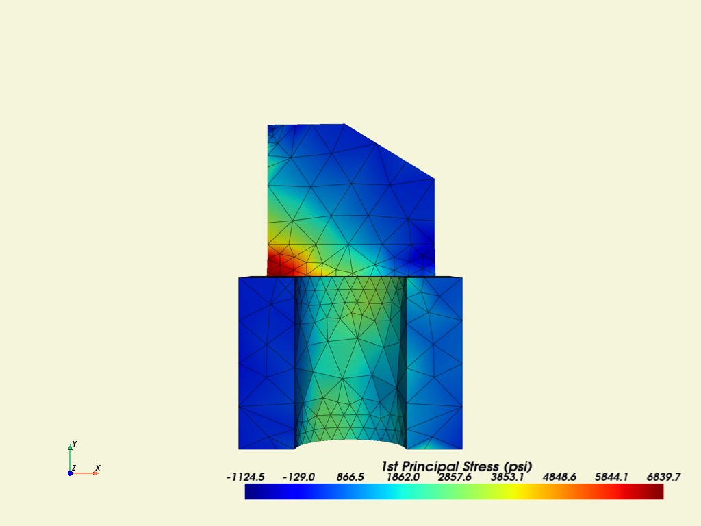
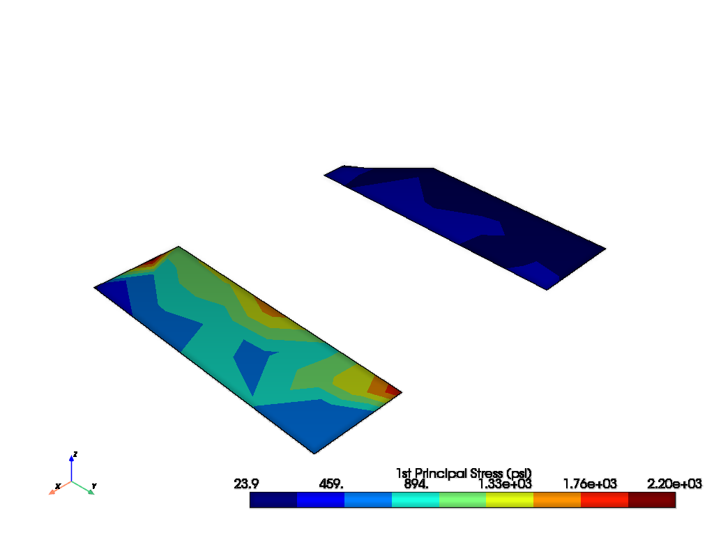
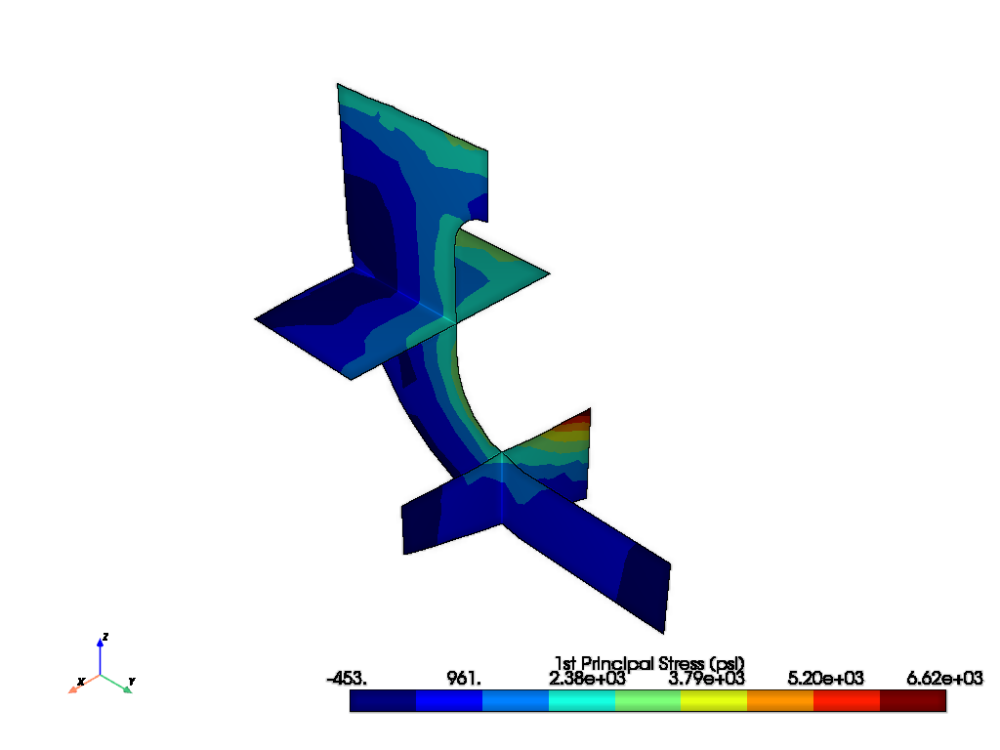
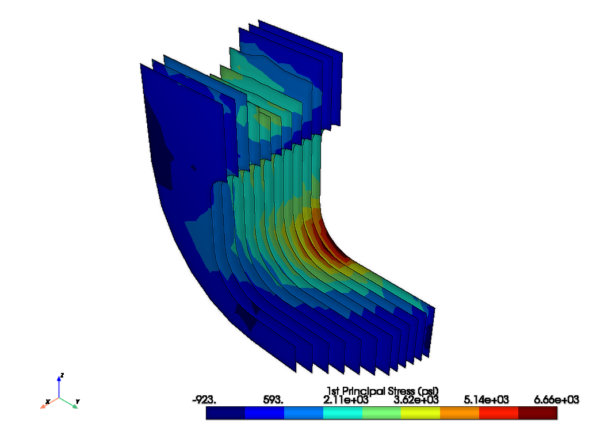

Note
Go to the end to download the full example code.
Structural Analysis of a Lathe Cutter#
Basic walk through PyMAPDL capabilities.
Objective#
The objective of this example is to highlight some regularly used PyMAPDL features via a lathe cutter finite element model. Lathe cutters have multiple avenues of wear and failure, and the analyses supporting their design would most often be transient thermal-structural. However, for simplicity, this simulation example uses a non-uniform load.

Figure 1: Lathe cutter geometry and load description.#
Contents#
Variables and launch Define necessary variables and launch MAPDL.
Geometry, mesh, and MAPDL parameters Import geometry and inspect for MAPDL parameters. Define linear elastic material model with Python variables. Mesh and apply symmetry boundary conditions.
Coordinate system and load Create a local coordinate system for the applied load and verify with a plot.
Pressure load Define the pressure load as a sine function of the length of the application area using numpy arrays. Import the pressure array into MAPDL as a table array. Verify the applied load and solve.
Plotting Show result plotting, plotting with selection, and working with the plot legend.
Postprocessing: List a result two ways: use PyMAPDL and the Pythonic version of APDL. Demonstrate extended methods and writing a list to a file.
Advanced plotting Use of
pyvista.UnstructuredGridfor additional postprocessing.
Step 1: Variables and launch#
Define variables and launch MAPDL.
Often used MAPDL command line options are exposed as Pythonic parameter names in
ansys.mapdl.core.launcher.launch_mapdl(). For example, -dir
has become run_location.
You could use run_location to specify the MAPDL run location. For example:
mapdl = launch_mapdl(run_location=path)
Otherwise, the MAPDL working directory is stored in mapdl.directory. In this
directory, MAPDL will create some of the images we will show later.
Options without a Pythonic version can be accessed by the additional_switches
parameter.
Here -smp is used only to keep the number of solver files to a minimum.
mapdl = launch_mapdl(additional_switches="-smp")
Step 2: Geometry, mesh, and MAPDL parameters#
Import geometry and inspect for MAPDL parameters.
Define material and mesh, and then create boundary conditions.
# First, reset the MAPDL database.
mapdl.clear()
Import the geometry file and list any MAPDL parameters.
lathe_cutter_geo = download_example_data("LatheCutter.anf", "geometry")
mapdl.input(lathe_cutter_geo)
mapdl.finish()
print(mapdl.parameters)
MAPDL Parameters
----------------
PRESS_LENGTH : 0.055
UNIT_SYSTEM : "bin"
Use pressure area per length in the load definition.
pressure_length = mapdl.parameters["PRESS_LENGTH"]
print(mapdl.parameters)
MAPDL Parameters
----------------
PRESS_LENGTH : 0.055
UNIT_SYSTEM : "bin"
Change the units and title.
mapdl.units("Bin")
mapdl.title("Lathe Cutter")
TITLE=
Lathe Cutter
Set material properties.
MATERIAL 1 NUXY = 0.2700000
The MAPDL element type SOLID285 is used for demonstration purposes.
Consider using an appropriate element type or mesh density for your actual
application.
mapdl.et(1, 285)
mapdl.smrtsize(4)
mapdl.aesize(14, 0.0025)
mapdl.vmesh(1)
mapdl.da(11, "symm")
mapdl.da(16, "symm")
mapdl.da(9, "symm")
mapdl.da(10, "symm")
CONSTRAINT AT AREA 10
LOAD LABEL = SYMM
Step 3: Coordinate system and load#
Create a local Coordinate System (CS) for the applied pressure as a function of local X.
Local CS ID is 11
mapdl.cskp(11, 0, 2, 1, 13)
mapdl.csys(1)
mapdl.view(1, -1, 1, 1)
mapdl.psymb("CS", 1)
mapdl.vplot(
color_areas=True,
show_lines=True,
cpos=[-1, 1, 1],
smooth_shading=True,
)


VTK plots do not show MAPDL plot symbols.
However, to use MAPDL plotting capabilities, you can set the keyword
option backend to GraphicsBackend.MAPDL.
mapdl.set_graphics_backend(GraphicsBackend.MAPDL)
mapdl.lplot()

Step 4: Pressure load#
Create a pressure load, load it into MAPDL as a table array, verify the load, and solve.
length_x and press are vectors. To combine them into the correct
form needed to define the MAPDL table array, you can use
numpy.stack.
SELECT ALL ENTITIES OF TYPE= ALL AND BELOW
You can open the MAPDL GUI to check the model.
mapdl.open_gui()
Set up the solution.
mapdl.finish()
mapdl.slashsolu()
mapdl.nlgeom("On")
mapdl.psf("PRES", "NORM", 3, 0, 1)
mapdl.view(1, -1, 1, 1)
mapdl.eplot()

Solve the model.
mapdl.solve()
mapdl.finish()
if mapdl.solution.converged:
print("The solution has converged.")
The solution has converged.
Step 5: Plotting#
mapdl.post1()
mapdl.set("last")
mapdl.allsel()
mapdl.post_processing.plot_nodal_principal_stress("1", smooth_shading=False)

Plotting - Part of Model#
mapdl.csys(1)
mapdl.nsel("S", "LOC", "Z", -0.5, -0.141)
mapdl.esln()
mapdl.nsle()
mapdl.post_processing.plot_nodal_principal_stress(
"1", edge_color="white", show_edges=True
)

Plotting - Legend Options#
mapdl.allsel()
sbar_kwargs = {
"color": "black",
"title": "1st Principal Stress (psi)",
"vertical": False,
"n_labels": 6,
}
mapdl.post_processing.plot_nodal_principal_stress(
"1",
cpos="xy",
background="white",
edge_color="black",
show_edges=True,
scalar_bar_args=sbar_kwargs,
n_colors=9,
)

Let’s try out some scalar bar options from the PyVista documentation. For example, let’s set black text on a beige background.
The scalar bar keywords defined as a Python dictionary are an alternate method to using {key:value}’s. You can use the click-and drag method to reposition the scalar bar. Left-click it and hold down the left mouse button while moving the mouse.
sbar_kwargs = dict(
title_font_size=20,
label_font_size=16,
shadow=True,
n_labels=9,
italic=True,
bold=True,
fmt="%.1f",
font_family="arial",
title="1st Principal Stress (psi)",
color="black",
)
mapdl.post_processing.plot_nodal_principal_stress(
"1",
cpos="xy",
edge_color="black",
background="beige",
show_edges=True,
scalar_bar_args=sbar_kwargs,
n_colors=256,
cmap="jet",
)
# cmap names *_r usually reverses values. Try cmap='jet_r'

Step 6: Postprocessing#
Results List#
Get all principal nodal stresses.
mapdl.post_processing.nodal_principal_stress("1")
array([1198.57579767, 1308.34504437, 111.30926037, ..., 1661.40054553,
1323.07883472, 1360.64830955], shape=(1256,))
Get the principal nodal stresses of the node subset.
mapdl.nsel("S", vmin=1200, vmax=1210)
mapdl.esln()
mapdl.nsle()
print("The node numbers are:")
print(mapdl.mesh.nnum) # get node numbers
print("The principal nodal stresses are:")
mapdl.post_processing.nodal_principal_stress("1")
The node numbers are:
[ 136 182 183 224 230 234 308 309 314 318 319 320 323 327
328 335 540 541 551 552 567 568 588 589 606 623 803 805
823 825 828 875 877 929 931 934 953 954 958 960 966 967
982 984 991 992 1010 1025 1026 1028 1030 1032 1033 1034 1035 1036
1038 1044 1057 1060 1061 1062 1063 1066 1073 1074 1076 1080 1083 1092
1106 1108 1111 1112 1113 1139 1141 1142 1155 1156 1167 1179 1183 1186
1189 1191 1192 1193 1195 1200 1201 1202 1203 1204 1205 1206 1207 1208
1209 1210 1213 1214 1217 1220 1228 1229 1237 1240 1247 1254]
The principal nodal stresses are:
array([1281.72482139, 2029.38651448, 2161.18160398, 1857.9443108 ,
1918.84749325, 2055.24661632, 1667.76516003, 1978.42330041,
1990.71214216, 1762.06244982, 2024.8311772 , 1522.12057766,
2689.88043805, 2039.08487218, 1789.90656203, 2067.40101881,
1146.76110973, 936.06259973, 841.16939426, 594.72734953,
1416.69223097, 1134.48432398, 1578.5872917 , 1359.89252113,
1478.05265848, 1206.67022667, 1595.44612291, 1143.91527296,
1395.25449609, 1241.86300494, 1685.56370917, 958.12514575,
1223.27298245, 1739.72394892, 1090.24115754, 1714.17619179,
1601.20738925, 1499.02246388, 1634.50350122, 1706.07527702,
1550.57396923, 1470.70809508, 1733.73913416, 1657.85240345,
867.25918668, 1341.6436512 , 1277.47107546, 1486.31568363,
1632.87890215, 1412.75810577, 1571.20871717, 643.1930836 ,
581.20900027, 471.21735159, 797.9139492 , 1195.84981191,
473.4598491 , 1498.73234632, 678.63995303, 834.03035686,
414.7839368 , 1116.39653713, 1284.2434441 , 838.60503594,
1077.97360228, 717.31063819, 817.10244553, 1691.40322493,
1584.59525511, 1696.46919145, 1475.38064842, 1445.1281999 ,
766.50844046, 912.40882881, 534.67889054, 1584.26320488,
1133.34246848, 977.64038109, 553.42613403, 827.32583565,
762.64237376, 1510.72068091, 1508.27471246, 1619.19916941,
1766.77209174, 308.96355677, 1525.2342558 , 1441.03452657,
1485.33842977, 1312.47000047, 1230.42447306, 769.90561755,
1604.72836589, 1552.52280765, 1335.92092243, 441.89335984,
714.65778852, 1634.75339463, 1442.83001886, 1585.33959096,
2106.53623501, 1877.71009534, 1747.75446846, 1363.36708227,
1628.50930717, 1654.26581462, 1516.37216606, 1555.75039333,
1543.48254581, 1544.01439615])
Results as lists, arrays, and DataFrames#
Using mapdl.prnsol() to check
print(mapdl.prnsol("S", "PRIN"))
PRINT S NODAL SOLUTION PER NODE
*****MAPDL VERIFICATION RUN ONLY*****
DO NOT USE RESULTS FOR PRODUCTION
***** POST1 NODAL STRESS LISTING *****
LOAD STEP= 1 SUBSTEP= 1
TIME= 1.0000 LOAD CASE= 0
NODE S1 S2 S3 SINT SEQV
136 1281.7 338.17 -604.30 1886.0 1633.3
182 2029.4 -46.893 -1738.6 3768.0 3268.8
183 2161.2 48.185 -1885.3 4046.5 3505.5
224 1857.9 105.79 -92.648 1950.6 1859.3
230 1918.8 263.06 19.578 1899.3 1790.0
234 2055.2 405.89 124.23 1931.0 1806.7
308 1667.8 93.604 -376.44 2044.2 1854.4
309 1978.4 -111.52 -2098.5 4077.0 3531.1
314 1990.7 48.305 -2290.2 4280.9 3712.6
318 1762.1 121.90 -302.83 2064.9 1888.7
319 2024.8 -50.729 -2041.6 4066.4 3521.9
320 1522.1 25.556 -1703.9 3226.0 2796.2
323 2689.9 33.554 -2122.0 4811.9 4174.7
327 2039.1 -94.958 -2124.3 4163.4 3605.9
328 1789.9 53.204 -1816.7 3606.6 3124.1
335 2067.4 -57.786 -2148.1 4215.5 3650.8
540 1146.8 259.56 -557.00 1703.8 1475.9
541 936.06 317.60 -350.49 1286.6 1114.5
551 841.17 299.55 -338.10 1179.3 1022.4
552 594.73 176.52 -241.72 836.44 724.38
567 1416.7 308.56 -672.70 2089.4 1810.6
568 1134.5 241.43 -553.10 1687.6 1462.3
588 1578.6 258.86 -782.92 2361.5 2049.8
589 1359.9 323.71 -583.83 1943.7 1684.5
606 1478.1 249.59 -661.35 2139.4 1859.6
623 1206.7 186.70 -494.51 1701.2 1483.0
803 1595.4 219.43 -644.63 2240.1 1956.8
805 1143.9 209.66 -439.04 1583.0 1378.3
823 1395.3 -66.519 -1750.2 3145.5 2726.3
825 1241.9 165.33 -1612.3 2854.2 2496.5
828 1685.6 147.46 -1824.8 3510.4 3047.8
875 958.13 245.01 -362.29 1320.4 1144.7
877 1223.3 264.72 -544.98 1768.3 1533.2
929 1739.7 -44.209 -1786.6 3526.4 3054.0
931 1090.2 -309.18 -1825.7 2916.0 2526.0
934 1714.2 24.432 -1843.7 3557.9 3082.5
953 1601.2 -51.134 -1201.9 2803.1 2440.4
954 1499.0 -152.84 -1066.4 2565.4 2252.2
958 1634.5 -67.086 -1272.9 2907.4 2530.0
*****MAPDL VERIFICATION RUN ONLY*****
DO NOT USE RESULTS FOR PRODUCTION
***** POST1 NODAL STRESS LISTING *****
LOAD STEP= 1 SUBSTEP= 1
TIME= 1.0000 LOAD CASE= 0
NODE S1 S2 S3 SINT SEQV
960 1706.1 -36.354 -1117.0 2823.1 2467.2
966 1550.6 -70.460 -1051.3 2601.9 2275.9
967 1470.7 -89.229 -1035.8 2506.5 2192.3
982 1733.7 447.17 -162.23 1896.0 1676.5
984 1657.9 181.03 -273.42 1931.3 1748.9
991 867.26 -273.05 -2092.2 2959.5 2585.3
992 1341.6 -35.186 -2020.6 3362.3 2927.7
1010 1277.5 -24.099 -1642.5 2920.0 2533.7
1025 1486.3 209.34 -268.07 1754.4 1571.1
1026 1632.9 322.17 -97.432 1730.3 1563.3
1028 1412.8 99.025 -316.08 1728.8 1563.2
1030 1571.2 117.42 -126.23 1697.4 1589.7
1032 643.19 -405.56 -1769.5 2412.7 2095.4
1033 581.21 -451.07 -2025.8 2607.0 2274.0
1034 471.22 -534.53 -2248.6 2719.8 2381.9
1035 797.91 211.70 -467.84 1265.8 1097.2
1036 1195.8 286.54 -547.65 1743.5 1510.4
1038 473.46 -589.94 -1783.9 2257.4 1956.0
1044 1498.7 -128.39 -1101.4 2600.1 2275.4
1057 678.64 168.02 -327.35 1006.0 871.24
1060 834.03 -234.47 -2132.0 2966.1 2601.9
1061 414.78 -574.19 -2336.0 2750.8 2413.4
1062 1116.4 53.533 -1981.6 3098.0 2726.6
1063 1284.2 37.693 -1940.3 3224.5 2816.3
1066 838.61 -243.55 -1899.3 2737.9 2388.4
1073 1078.0 -131.26 -1749.0 2827.0 2456.7
1074 717.31 -448.10 -1738.3 2455.6 2127.5
1076 817.10 -309.46 -1546.9 2364.0 2048.1
1080 1691.4 331.29 -141.01 1832.4 1647.8
1083 1584.6 294.25 -209.43 1794.0 1602.7
1092 1696.5 165.95 -26.689 1723.2 1635.4
1106 1475.4 -94.120 -1255.3 2730.6 2373.6
1108 1445.1 -104.32 -1044.2 2489.3 2177.3
1111 766.51 218.23 -220.66 987.17 856.66
1112 912.41 231.20 -266.41 1178.8 1025.0
1113 534.68 181.81 -193.26 727.94 630.51
1139 1584.3 -14.429 -2089.8 3674.1 3190.8
1141 1133.3 -235.98 -1956.7 3090.1 2681.9
1142 977.64 -209.09 -1904.3 2881.9 2508.7
*****MAPDL VERIFICATION RUN ONLY*****
DO NOT USE RESULTS FOR PRODUCTION
***** POST1 NODAL STRESS LISTING *****
LOAD STEP= 1 SUBSTEP= 1
TIME= 1.0000 LOAD CASE= 0
NODE S1 S2 S3 SINT SEQV
1155 553.43 -338.60 -2028.0 2581.5 2270.9
1156 827.33 -264.54 -2034.6 2861.9 2501.6
1167 762.64 246.06 -253.83 1016.5 880.33
1179 1510.7 -94.649 -943.21 2453.9 2158.6
1183 1508.3 294.12 -605.38 2113.7 1837.2
1186 1619.2 341.54 -624.80 2244.0 1949.6
1189 1766.8 146.14 -98.132 1864.9 1755.6
1191 308.96 -530.25 -2304.4 2613.4 2311.0
1192 1525.2 100.43 -201.07 1726.3 1597.0
1193 1441.0 -59.928 -984.13 2425.2 2120.0
1195 1485.3 119.60 -241.26 1726.6 1577.4
1200 1312.5 306.06 -463.89 1776.4 1542.9
1201 1230.4 363.07 -401.59 1632.0 1414.3
1202 769.91 239.23 -318.76 1088.7 942.91
1203 1604.7 -21.264 -2073.3 3678.0 3192.3
1204 1552.5 116.82 -302.73 1855.3 1685.1
1205 1335.9 -118.39 -1788.9 3124.8 2708.3
1206 441.89 -478.54 -2233.3 2675.2 2354.1
1207 714.66 -350.72 -1733.4 2448.1 2126.0
1208 1634.8 179.76 -127.45 1762.2 1630.5
1209 1442.8 14.216 -1873.6 3316.5 2881.3
1210 1585.3 -54.837 -1114.7 2700.1 2356.2
1213 2106.5 -55.326 -2115.7 4222.2 3656.9
1214 1877.7 213.84 -1735.6 3613.3 3132.5
1217 1747.8 -42.083 -1301.5 3049.2 2654.0
1220 1363.4 40.561 -1692.0 3055.4 2653.9
1228 1628.5 -73.804 -1373.1 3001.6 2607.3
1229 1654.3 -137.57 -1333.5 2987.7 2604.6
1237 1516.4 74.215 -1995.2 3511.6 3057.3
1240 1555.8 -151.77 -1350.1 2905.9 2529.4
1247 1543.5 -139.82 -1216.5 2760.0 2409.4
1254 1544.0 -203.99 -1317.3 2861.3 2498.2
MINIMUM VALUES
NODE 0 0 0 0 0
VALUE 308.96 -589.94 -2336.0 727.94 630.51
MAXIMUM VALUES
NODE 0 0 0 0 0
VALUE 2689.9 447.17 124.23 4811.9 4174.7
Use this command to obtain the data as a list.
mapdl_s_1_list = mapdl.prnsol("S", "PRIN").to_list()
print(mapdl_s_1_list)
[[136.0, 1281.7, 338.17, -604.3, 1886.0, 1633.3], [182.0, 2029.4, -46.893, -1738.6, 3768.0, 3268.8], [183.0, 2161.2, 48.185, -1885.3, 4046.5, 3505.5], [224.0, 1857.9, 105.79, -92.648, 1950.6, 1859.3], [230.0, 1918.8, 263.06, 19.578, 1899.3, 1790.0], [234.0, 2055.2, 405.89, 124.23, 1931.0, 1806.7], [308.0, 1667.8, 93.604, -376.44, 2044.2, 1854.4], [309.0, 1978.4, -111.52, -2098.5, 4077.0, 3531.1], [314.0, 1990.7, 48.305, -2290.2, 4280.9, 3712.6], [318.0, 1762.1, 121.9, -302.83, 2064.9, 1888.7], [319.0, 2024.8, -50.729, -2041.6, 4066.4, 3521.9], [320.0, 1522.1, 25.556, -1703.9, 3226.0, 2796.2], [323.0, 2689.9, 33.554, -2122.0, 4811.9, 4174.7], [327.0, 2039.1, -94.958, -2124.3, 4163.4, 3605.9], [328.0, 1789.9, 53.204, -1816.7, 3606.6, 3124.1], [335.0, 2067.4, -57.786, -2148.1, 4215.5, 3650.8], [540.0, 1146.8, 259.56, -557.0, 1703.8, 1475.9], [541.0, 936.06, 317.6, -350.49, 1286.6, 1114.5], [551.0, 841.17, 299.55, -338.1, 1179.3, 1022.4], [552.0, 594.73, 176.52, -241.72, 836.44, 724.38], [567.0, 1416.7, 308.56, -672.7, 2089.4, 1810.6], [568.0, 1134.5, 241.43, -553.1, 1687.6, 1462.3], [588.0, 1578.6, 258.86, -782.92, 2361.5, 2049.8], [589.0, 1359.9, 323.71, -583.83, 1943.7, 1684.5], [606.0, 1478.1, 249.59, -661.35, 2139.4, 1859.6], [623.0, 1206.7, 186.7, -494.51, 1701.2, 1483.0], [803.0, 1595.4, 219.43, -644.63, 2240.1, 1956.8], [805.0, 1143.9, 209.66, -439.04, 1583.0, 1378.3], [823.0, 1395.3, -66.519, -1750.2, 3145.5, 2726.3], [825.0, 1241.9, 165.33, -1612.3, 2854.2, 2496.5], [828.0, 1685.6, 147.46, -1824.8, 3510.4, 3047.8], [875.0, 958.13, 245.01, -362.29, 1320.4, 1144.7], [877.0, 1223.3, 264.72, -544.98, 1768.3, 1533.2], [929.0, 1739.7, -44.209, -1786.6, 3526.4, 3054.0], [931.0, 1090.2, -309.18, -1825.7, 2916.0, 2526.0], [934.0, 1714.2, 24.432, -1843.7, 3557.9, 3082.5], [953.0, 1601.2, -51.134, -1201.9, 2803.1, 2440.4], [954.0, 1499.0, -152.84, -1066.4, 2565.4, 2252.2], [958.0, 1634.5, -67.086, -1272.9, 2907.4, 2530.0], [960.0, 1706.1, -36.354, -1117.0, 2823.1, 2467.2], [966.0, 1550.6, -70.46, -1051.3, 2601.9, 2275.9], [967.0, 1470.7, -89.229, -1035.8, 2506.5, 2192.3], [982.0, 1733.7, 447.17, -162.23, 1896.0, 1676.5], [984.0, 1657.9, 181.03, -273.42, 1931.3, 1748.9], [991.0, 867.26, -273.05, -2092.2, 2959.5, 2585.3], [992.0, 1341.6, -35.186, -2020.6, 3362.3, 2927.7], [1010.0, 1277.5, -24.099, -1642.5, 2920.0, 2533.7], [1025.0, 1486.3, 209.34, -268.07, 1754.4, 1571.1], [1026.0, 1632.9, 322.17, -97.432, 1730.3, 1563.3], [1028.0, 1412.8, 99.025, -316.08, 1728.8, 1563.2], [1030.0, 1571.2, 117.42, -126.23, 1697.4, 1589.7], [1032.0, 643.19, -405.56, -1769.5, 2412.7, 2095.4], [1033.0, 581.21, -451.07, -2025.8, 2607.0, 2274.0], [1034.0, 471.22, -534.53, -2248.6, 2719.8, 2381.9], [1035.0, 797.91, 211.7, -467.84, 1265.8, 1097.2], [1036.0, 1195.8, 286.54, -547.65, 1743.5, 1510.4], [1038.0, 473.46, -589.94, -1783.9, 2257.4, 1956.0], [1044.0, 1498.7, -128.39, -1101.4, 2600.1, 2275.4], [1057.0, 678.64, 168.02, -327.35, 1006.0, 871.24], [1060.0, 834.03, -234.47, -2132.0, 2966.1, 2601.9], [1061.0, 414.78, -574.19, -2336.0, 2750.8, 2413.4], [1062.0, 1116.4, 53.533, -1981.6, 3098.0, 2726.6], [1063.0, 1284.2, 37.693, -1940.3, 3224.5, 2816.3], [1066.0, 838.61, -243.55, -1899.3, 2737.9, 2388.4], [1073.0, 1078.0, -131.26, -1749.0, 2827.0, 2456.7], [1074.0, 717.31, -448.1, -1738.3, 2455.6, 2127.5], [1076.0, 817.1, -309.46, -1546.9, 2364.0, 2048.1], [1080.0, 1691.4, 331.29, -141.01, 1832.4, 1647.8], [1083.0, 1584.6, 294.25, -209.43, 1794.0, 1602.7], [1092.0, 1696.5, 165.95, -26.689, 1723.2, 1635.4], [1106.0, 1475.4, -94.12, -1255.3, 2730.6, 2373.6], [1108.0, 1445.1, -104.32, -1044.2, 2489.3, 2177.3], [1111.0, 766.51, 218.23, -220.66, 987.17, 856.66], [1112.0, 912.41, 231.2, -266.41, 1178.8, 1025.0], [1113.0, 534.68, 181.81, -193.26, 727.94, 630.51], [1139.0, 1584.3, -14.429, -2089.8, 3674.1, 3190.8], [1141.0, 1133.3, -235.98, -1956.7, 3090.1, 2681.9], [1142.0, 977.64, -209.09, -1904.3, 2881.9, 2508.7], [1155.0, 553.43, -338.6, -2028.0, 2581.5, 2270.9], [1156.0, 827.33, -264.54, -2034.6, 2861.9, 2501.6], [1167.0, 762.64, 246.06, -253.83, 1016.5, 880.33], [1179.0, 1510.7, -94.649, -943.21, 2453.9, 2158.6], [1183.0, 1508.3, 294.12, -605.38, 2113.7, 1837.2], [1186.0, 1619.2, 341.54, -624.8, 2244.0, 1949.6], [1189.0, 1766.8, 146.14, -98.132, 1864.9, 1755.6], [1191.0, 308.96, -530.25, -2304.4, 2613.4, 2311.0], [1192.0, 1525.2, 100.43, -201.07, 1726.3, 1597.0], [1193.0, 1441.0, -59.928, -984.13, 2425.2, 2120.0], [1195.0, 1485.3, 119.6, -241.26, 1726.6, 1577.4], [1200.0, 1312.5, 306.06, -463.89, 1776.4, 1542.9], [1201.0, 1230.4, 363.07, -401.59, 1632.0, 1414.3], [1202.0, 769.91, 239.23, -318.76, 1088.7, 942.91], [1203.0, 1604.7, -21.264, -2073.3, 3678.0, 3192.3], [1204.0, 1552.5, 116.82, -302.73, 1855.3, 1685.1], [1205.0, 1335.9, -118.39, -1788.9, 3124.8, 2708.3], [1206.0, 441.89, -478.54, -2233.3, 2675.2, 2354.1], [1207.0, 714.66, -350.72, -1733.4, 2448.1, 2126.0], [1208.0, 1634.8, 179.76, -127.45, 1762.2, 1630.5], [1209.0, 1442.8, 14.216, -1873.6, 3316.5, 2881.3], [1210.0, 1585.3, -54.837, -1114.7, 2700.1, 2356.2], [1213.0, 2106.5, -55.326, -2115.7, 4222.2, 3656.9], [1214.0, 1877.7, 213.84, -1735.6, 3613.3, 3132.5], [1217.0, 1747.8, -42.083, -1301.5, 3049.2, 2654.0], [1220.0, 1363.4, 40.561, -1692.0, 3055.4, 2653.9], [1228.0, 1628.5, -73.804, -1373.1, 3001.6, 2607.3], [1229.0, 1654.3, -137.57, -1333.5, 2987.7, 2604.6], [1237.0, 1516.4, 74.215, -1995.2, 3511.6, 3057.3], [1240.0, 1555.8, -151.77, -1350.1, 2905.9, 2529.4], [1247.0, 1543.5, -139.82, -1216.5, 2760.0, 2409.4], [1254.0, 1544.0, -203.99, -1317.3, 2861.3, 2498.2]]
Use this command to obtain the data as an array:
mapdl_s_1_array = mapdl.prnsol("S", "PRIN").to_array()
print(mapdl_s_1_array)
[[ 136. 1281.7 338.17 -604.3 1886. 1633.3 ]
[ 182. 2029.4 -46.893 -1738.6 3768. 3268.8 ]
[ 183. 2161.2 48.185 -1885.3 4046.5 3505.5 ]
[ 224. 1857.9 105.79 -92.648 1950.6 1859.3 ]
[ 230. 1918.8 263.06 19.578 1899.3 1790. ]
[ 234. 2055.2 405.89 124.23 1931. 1806.7 ]
[ 308. 1667.8 93.604 -376.44 2044.2 1854.4 ]
[ 309. 1978.4 -111.52 -2098.5 4077. 3531.1 ]
[ 314. 1990.7 48.305 -2290.2 4280.9 3712.6 ]
[ 318. 1762.1 121.9 -302.83 2064.9 1888.7 ]
[ 319. 2024.8 -50.729 -2041.6 4066.4 3521.9 ]
[ 320. 1522.1 25.556 -1703.9 3226. 2796.2 ]
[ 323. 2689.9 33.554 -2122. 4811.9 4174.7 ]
[ 327. 2039.1 -94.958 -2124.3 4163.4 3605.9 ]
[ 328. 1789.9 53.204 -1816.7 3606.6 3124.1 ]
[ 335. 2067.4 -57.786 -2148.1 4215.5 3650.8 ]
[ 540. 1146.8 259.56 -557. 1703.8 1475.9 ]
[ 541. 936.06 317.6 -350.49 1286.6 1114.5 ]
[ 551. 841.17 299.55 -338.1 1179.3 1022.4 ]
[ 552. 594.73 176.52 -241.72 836.44 724.38 ]
[ 567. 1416.7 308.56 -672.7 2089.4 1810.6 ]
[ 568. 1134.5 241.43 -553.1 1687.6 1462.3 ]
[ 588. 1578.6 258.86 -782.92 2361.5 2049.8 ]
[ 589. 1359.9 323.71 -583.83 1943.7 1684.5 ]
[ 606. 1478.1 249.59 -661.35 2139.4 1859.6 ]
[ 623. 1206.7 186.7 -494.51 1701.2 1483. ]
[ 803. 1595.4 219.43 -644.63 2240.1 1956.8 ]
[ 805. 1143.9 209.66 -439.04 1583. 1378.3 ]
[ 823. 1395.3 -66.519 -1750.2 3145.5 2726.3 ]
[ 825. 1241.9 165.33 -1612.3 2854.2 2496.5 ]
[ 828. 1685.6 147.46 -1824.8 3510.4 3047.8 ]
[ 875. 958.13 245.01 -362.29 1320.4 1144.7 ]
[ 877. 1223.3 264.72 -544.98 1768.3 1533.2 ]
[ 929. 1739.7 -44.209 -1786.6 3526.4 3054. ]
[ 931. 1090.2 -309.18 -1825.7 2916. 2526. ]
[ 934. 1714.2 24.432 -1843.7 3557.9 3082.5 ]
[ 953. 1601.2 -51.134 -1201.9 2803.1 2440.4 ]
[ 954. 1499. -152.84 -1066.4 2565.4 2252.2 ]
[ 958. 1634.5 -67.086 -1272.9 2907.4 2530. ]
[ 960. 1706.1 -36.354 -1117. 2823.1 2467.2 ]
[ 966. 1550.6 -70.46 -1051.3 2601.9 2275.9 ]
[ 967. 1470.7 -89.229 -1035.8 2506.5 2192.3 ]
[ 982. 1733.7 447.17 -162.23 1896. 1676.5 ]
[ 984. 1657.9 181.03 -273.42 1931.3 1748.9 ]
[ 991. 867.26 -273.05 -2092.2 2959.5 2585.3 ]
[ 992. 1341.6 -35.186 -2020.6 3362.3 2927.7 ]
[ 1010. 1277.5 -24.099 -1642.5 2920. 2533.7 ]
[ 1025. 1486.3 209.34 -268.07 1754.4 1571.1 ]
[ 1026. 1632.9 322.17 -97.432 1730.3 1563.3 ]
[ 1028. 1412.8 99.025 -316.08 1728.8 1563.2 ]
[ 1030. 1571.2 117.42 -126.23 1697.4 1589.7 ]
[ 1032. 643.19 -405.56 -1769.5 2412.7 2095.4 ]
[ 1033. 581.21 -451.07 -2025.8 2607. 2274. ]
[ 1034. 471.22 -534.53 -2248.6 2719.8 2381.9 ]
[ 1035. 797.91 211.7 -467.84 1265.8 1097.2 ]
[ 1036. 1195.8 286.54 -547.65 1743.5 1510.4 ]
[ 1038. 473.46 -589.94 -1783.9 2257.4 1956. ]
[ 1044. 1498.7 -128.39 -1101.4 2600.1 2275.4 ]
[ 1057. 678.64 168.02 -327.35 1006. 871.24 ]
[ 1060. 834.03 -234.47 -2132. 2966.1 2601.9 ]
[ 1061. 414.78 -574.19 -2336. 2750.8 2413.4 ]
[ 1062. 1116.4 53.533 -1981.6 3098. 2726.6 ]
[ 1063. 1284.2 37.693 -1940.3 3224.5 2816.3 ]
[ 1066. 838.61 -243.55 -1899.3 2737.9 2388.4 ]
[ 1073. 1078. -131.26 -1749. 2827. 2456.7 ]
[ 1074. 717.31 -448.1 -1738.3 2455.6 2127.5 ]
[ 1076. 817.1 -309.46 -1546.9 2364. 2048.1 ]
[ 1080. 1691.4 331.29 -141.01 1832.4 1647.8 ]
[ 1083. 1584.6 294.25 -209.43 1794. 1602.7 ]
[ 1092. 1696.5 165.95 -26.689 1723.2 1635.4 ]
[ 1106. 1475.4 -94.12 -1255.3 2730.6 2373.6 ]
[ 1108. 1445.1 -104.32 -1044.2 2489.3 2177.3 ]
[ 1111. 766.51 218.23 -220.66 987.17 856.66 ]
[ 1112. 912.41 231.2 -266.41 1178.8 1025. ]
[ 1113. 534.68 181.81 -193.26 727.94 630.51 ]
[ 1139. 1584.3 -14.429 -2089.8 3674.1 3190.8 ]
[ 1141. 1133.3 -235.98 -1956.7 3090.1 2681.9 ]
[ 1142. 977.64 -209.09 -1904.3 2881.9 2508.7 ]
[ 1155. 553.43 -338.6 -2028. 2581.5 2270.9 ]
[ 1156. 827.33 -264.54 -2034.6 2861.9 2501.6 ]
[ 1167. 762.64 246.06 -253.83 1016.5 880.33 ]
[ 1179. 1510.7 -94.649 -943.21 2453.9 2158.6 ]
[ 1183. 1508.3 294.12 -605.38 2113.7 1837.2 ]
[ 1186. 1619.2 341.54 -624.8 2244. 1949.6 ]
[ 1189. 1766.8 146.14 -98.132 1864.9 1755.6 ]
[ 1191. 308.96 -530.25 -2304.4 2613.4 2311. ]
[ 1192. 1525.2 100.43 -201.07 1726.3 1597. ]
[ 1193. 1441. -59.928 -984.13 2425.2 2120. ]
[ 1195. 1485.3 119.6 -241.26 1726.6 1577.4 ]
[ 1200. 1312.5 306.06 -463.89 1776.4 1542.9 ]
[ 1201. 1230.4 363.07 -401.59 1632. 1414.3 ]
[ 1202. 769.91 239.23 -318.76 1088.7 942.91 ]
[ 1203. 1604.7 -21.264 -2073.3 3678. 3192.3 ]
[ 1204. 1552.5 116.82 -302.73 1855.3 1685.1 ]
[ 1205. 1335.9 -118.39 -1788.9 3124.8 2708.3 ]
[ 1206. 441.89 -478.54 -2233.3 2675.2 2354.1 ]
[ 1207. 714.66 -350.72 -1733.4 2448.1 2126. ]
[ 1208. 1634.8 179.76 -127.45 1762.2 1630.5 ]
[ 1209. 1442.8 14.216 -1873.6 3316.5 2881.3 ]
[ 1210. 1585.3 -54.837 -1114.7 2700.1 2356.2 ]
[ 1213. 2106.5 -55.326 -2115.7 4222.2 3656.9 ]
[ 1214. 1877.7 213.84 -1735.6 3613.3 3132.5 ]
[ 1217. 1747.8 -42.083 -1301.5 3049.2 2654. ]
[ 1220. 1363.4 40.561 -1692. 3055.4 2653.9 ]
[ 1228. 1628.5 -73.804 -1373.1 3001.6 2607.3 ]
[ 1229. 1654.3 -137.57 -1333.5 2987.7 2604.6 ]
[ 1237. 1516.4 74.215 -1995.2 3511.6 3057.3 ]
[ 1240. 1555.8 -151.77 -1350.1 2905.9 2529.4 ]
[ 1247. 1543.5 -139.82 -1216.5 2760. 2409.4 ]
[ 1254. 1544. -203.99 -1317.3 2861.3 2498.2 ]]
or as a DataFrame:
mapdl_s_1_df = mapdl.prnsol("S", "PRIN").to_dataframe()
mapdl_s_1_df.head()
Use this command to obtain the data as a DataFrame, which is a. Pandas data type. Because the Pandas module is imported, you can use its functions. For example, you can write principal stresses to a file.
# mapdl_s_1_df.to_csv(path + '\prin-stresses.csv')
# mapdl_s_1_df.to_json(path + '\prin-stresses.json')
mapdl_s_1_df.to_html(path + "\\prin-stresses.html")
Step 7: Advanced plotting#
mapdl.allsel()
principal_1 = mapdl.post_processing.nodal_principal_stress("1")
Load this result into the VTK grid.
grid = mapdl.mesh.grid
grid["p1"] = principal_1
sbar_kwargs = {
"color": "black",
"title": "1st Principal Stress (psi)",
"vertical": False,
"n_labels": 6,
}
Generate a single horizontal slice along the XY plane.
Note
PyVista’s eye_dome_lighting method is used here to enhance the plots of the slices.
For more information, see`Eye Dome Lighting <pyvista_eye_dome_lighting>`_.
single_slice = grid.slice(normal=[0, 0, 1], origin=[0, 0, 0])
single_slice.plot(
scalars="p1",
background="white",
lighting=False,
eye_dome_lighting=True,
show_edges=False,
cmap="jet",
n_colors=9,
scalar_bar_args=sbar_kwargs,
)

Generate a plot with three slice planes.
slices = grid.slice_orthogonal()
slices.plot(
scalars="p1",
background="white",
lighting=False,
eye_dome_lighting=True,
show_edges=False,
cmap="jet",
n_colors=9,
scalar_bar_args=sbar_kwargs,
)

Generate a grid with multiple slices in the same plane.
slices = grid.slice_along_axis(12, "x")
slices.plot(
scalars="p1",
background="white",
show_edges=False,
lighting=False,
eye_dome_lighting=True,
cmap="jet",
n_colors=9,
scalar_bar_args=sbar_kwargs,
)

Finally, exit MAPDL.
mapdl.exit()
Total running time of the script: (0 minutes 7.785 seconds)